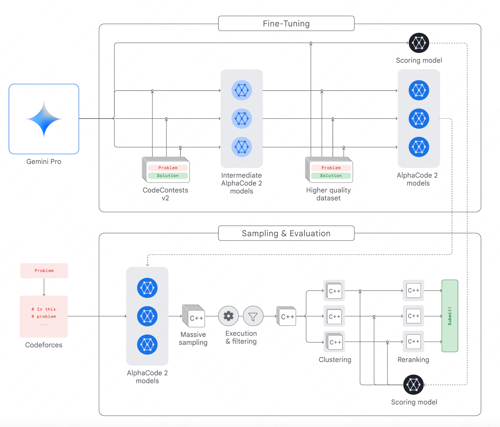
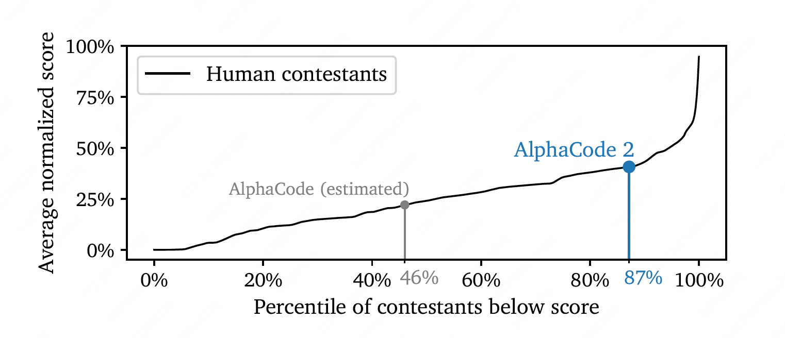

AlphaCode 2#
Note
This paper introduces AlphaCode 2, powered by Gemini. When evaluated on the same platform as the original AlphaCode, we found that AlphaCode 2 solved 1.7× more problems, and performed better than 85% of competition participants.
Overall System#
AlphaCode 2 relies on powerful Large Language Models, combined with an advanced search and reranking mechanism tailored for competitive programming. Its main components include:
A family of policy models which generate code samples for each problem;
A sampling mechanism that encourages generating a wide diversity of code samples to search over the space of possible programs;
A filtering mechanism to remove code samples that do not comply with the problem description;
A clustering algorithm that groups semantically similar code samples, allowing us to avoid redundancies;
A scoring model which we use to surface the best candidate out of each of the 10 biggest code samples clusters.

Policy and Fine-Tuning#
Our starting point is the Gemini Pro model, on which we apply two consecutive rounds of fine-tuning using GOLD as the training objective.
First, we fine-tune on an updated version of the CodeContests dataset. We generate several fine-tuned models by varying hyperparameters, and end up with a family of fine-tuned models. Second, we conduct a few additional steps of fine-tuning on a different, higher-quality dataset.
Relying on a family of policies instead of a single one allows us to maximize diversity, which remains key to tackling hard problems.
Sampling#
Our sampling approach is close to that of AlphaCode. We generate up to a million code samples per problem, using a randomized temperature parameter for each sample to encourage diversity. We also randomize targeted metadata included in the prompt, such as the problem difficulty rating and its categorical tags.
We split our sampling budget evenly across our family of fine-tuned models. While we sampled in Python and C++ for AlphaCode, we only used C++ samples for AlphaCode 2 as we found them to be higher quality.
Filtering#
Each competitive programming problem contains at least one public input/output test indicating how code samples should behave. We execute each code sample on the corresponding test input, and filter out all which do not produce the expected output and therefore could not have been correct.
Clustering#
After filtering, we are left with an average of 50 thousand candidates per problem, but we limit ourselves to 10 submissions. To further trim down candidates, we aggregate samples based on their runtime behavior: as in AlphaCode, we train a separate model to generate new test inputs for each problem, then execute the remaining samples on these new inputs. The produced outputs form a signature that we use to group similar code samples together into clusters. We then order the clusters according to their cardinality, and only keep the 10 largest.
The point of clustering is to avoid redundancies: since code samples in the same cluster behave similarly, we can submit a single one per cluster to the online judge to obtain the best result.
Scoring Model#
We fine-tune a second Gemini Pro model to attribute an estimated correctness score between 0 and 1 to code samples. Using this scoring model, we compute a score for each code sample in our remaining clusters; we then select the best candidate sample out of each cluster based on this predicted score to form our final list of 10 submissions.
Evaluation#
We evaluated AlphaCode 2 on Codeforces. We selected 12 recent contests with more than 8000 participants, either from division 2 or the harder division “1+2”. This makes for a total of 77 problems. For each problem, we sampled one million candidates and submitted up to 10 solutions selected and ordered according to the procedure detailed above, until either one correct solution was found, or we ran out of candidates.

We evaluated the impact of increasing the amount of samples per problem. As was the case for AlphaCode, we find that performance increases roughly log-linearly with more samples. AlphaCode 2 requires about 100 samples to reach the level of performance of AlphaCode with a million samples, making it over 10000× more sample efficient.